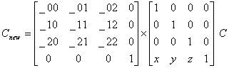

#include <nitro/gx/g3imm.h>
#include <nitro/gx/g3b.h>
#include <nitro/gx/g3c.h>
void G3_MultTransMtx33(const MtxFx33* m);
// Below are APIs for creating the display list (command list)
void G3B_MultTransMtx33(GXDLInfo* info, const MtxFx33* mtx, const VECFx32* vec);
void G3C_MultTransMtx33(GXDLInfo* info, const MtxFx33* mtx, const VECFx32* vec);
void G3BS_MultTransMtx33(GXDLInfo* info, const MtxFx33* mtx, const VECFx32* vec);
void G3CS_MultTransMtx33(GXDLInfo* info, const MtxFx33* mtx, const VECFx32* vec);| info | Command List Information |
| mtx | Pointer to the matrix to be multiplied |
| vec | Pointer to the distance vector to translate |
None.
The current matrix is multiplied on the left by a 4x3 matrix. This process is equivalent to multiplying the current matrix by both a translation matrix and a 3x3 matrix. Each element of the matrix is a signed fixed-point number (sign + 19-bit integer + 12-bit decimal). If the current matrix is C, then the new matrix, Cnew, is in the format shown below.

G3*_MultMtx43, G3*_MultMtx33, G3*_Translate
08/02/2004 Initial version
CONFIDENTIAL